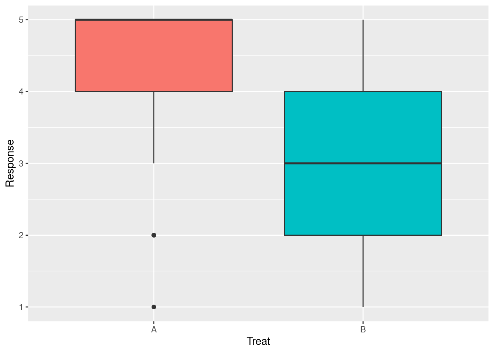
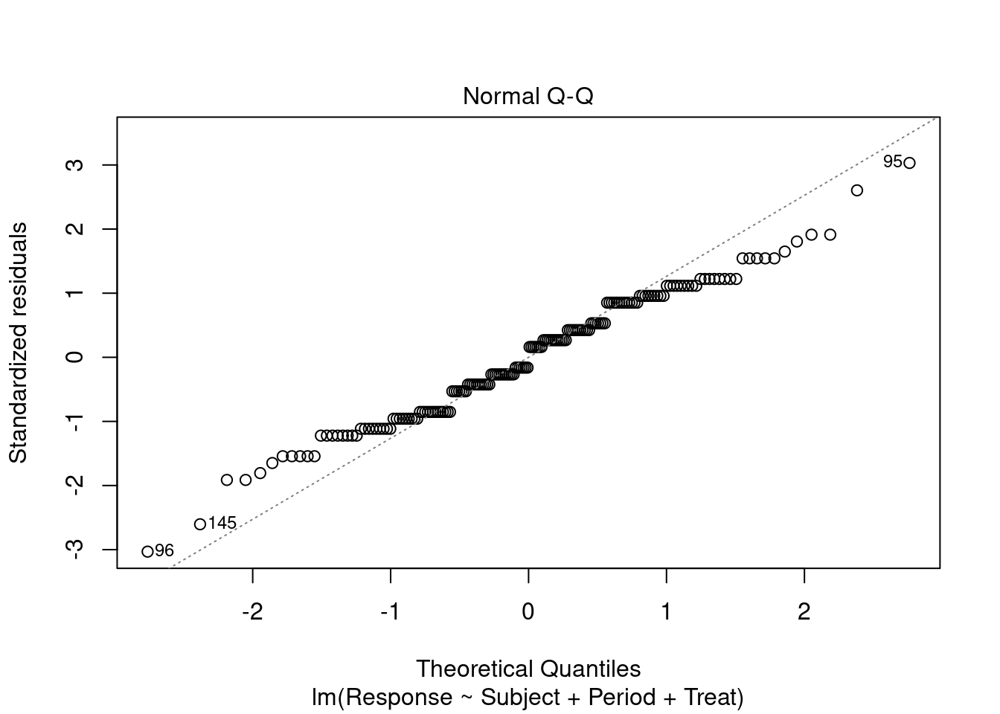

Vamos a realizar un análisis de la varianza para diseños cruzados
con dos niveles de factor (bien subtitulado/mal subtitulado) para la
pregunta 18 del test que es una valoración general del subtitulado.
Empezaremos realizando una preparación de los datos y
especificaremos distintos modelos con complejidad creciente.
Vamos a cambiar la nomenclatura para adaptarla a
Lawson (2018):
El grupo A pasará a llamarse AB.
El grupo B pasará a llamarse BA.
Los estudiantes se denominarán sujetos.
Los test 01 y 02 tratamientos.
Se introduce una variable periodo.
Los valores del test de Likert se desplazarán para que tengan
valores más lógicos:
0 = No sé / No constesto
1 = Muy en desacuerdo
2 = En desacuerdo
3 = Neutral
4 = De acuerdo
5 = Muy de acuerdo
Finalmente la tabla se pasará a formato largo.
# A tibble: 3,132 × 6
Group Period Treat Subject Item Response
<fct> <fct> <fct> <fct> <chr> <dbl>
1 AB 1 A 4 Q01 3
2 AB 1 A 4 Q02 3
3 AB 1 A 4 Q03 3
4 AB 1 A 4 Q04 3
5 AB 1 A 4 Q05 3
6 AB 1 A 4 Q06 3
7 AB 1 A 4 Q07 3
8 AB 1 A 4 Q08 3
9 AB 1 A 4 Q09 3
10 AB 1 A 4 Q10 3
# … with 3,122 more rows
El análisis de la varianza, ANOVA, se debe realizar una variable
de respuesta cuantitativo (TODO: incluir supuestos de ANOVA). El
test de Likert tiene una escala ordinal y, por lo tanto, ANOVA no
es una técnica adecuada.
Modelo nulo.
Especificación del modelo.
Vamos a comenzar ajustando el modelo nulo que es aquel que no
tiene predictores. La ecuación del modelo nulos será:
\[ Y \sim N(\mu, \sigma^2), \textrm{ independientes}
\tag{1}\]
Los valores observados
\(y\) corresponden a las
respuestas a la pregunta 18 y siguen una distribución normal con
media \(\mu\) y varianza
\(\sigma^2\). Es decir, que
estamos suponiendo que todas las respuestas tienen la misma
media.
Con
\(\epsilon \textrm{ i.i.d.} \sim N(0,\sigma^2)\). En esta ecuación simplemente hemos separado el término
determinista \(\mu\) del
estocástico \(\epsilon\).
Ajuste del modelo.
Finalmente ajustamos el modelo y mostramos los coeficientes:
fit.1<-aov(Response ~1, data = df18)coef.1<-coef(fit.1)coef.1
(Intercept)
3.672414
El valor ajustado del intercepto se corresponde con las media de
las preguntas.
ANOVA de un factor.
En este apartado seguimos el desarrollo descrito en
Meier (2022)
(chap. 2).
Especificación del modelo.
El principal efecto que queremos conocer es el efecto que tiene
la calidad del subtitulado sobre las respuestas de los
estudiantes. Incluimos en el modelo la calidad del subtitulado.
El nuevo modelo será:
Los valores observados
\(y_{i}\) corresponden a las
respuestas a la pregunta 18 del i-ésimo tratamiento (A o B) y
siguen una distribución normal con media
\(\mu_i\) y varianza
\(\sigma^2\). Es decir, que
estamos suponiendo que los dos tratamientos tienen la misma
varianza pero pueden tener distinta media.
Con
\(\epsilon_{i} \textrm{ i.i.d.} \sim N(0,\sigma^2)\). En esta ecuación simplemente hemos separado el término
determinista \(\mu_i\) del
estocástico \(\epsilon_{ij}\).
Una reparametrización alternativa es:
\[ y_{i} = \mu + \tau_i + \epsilon_{i} \tag{5}\]
En este caso, estamos considerando que existe un efecto fijo,
\(\mu\), y que cada factor
tiene una desviación,
\(\tau_i\), sobre el nivel
fijo. Así,
\(\displaystyle \sum \tau_i = 0\). Lo que en nuestro caso, en el que sólo hay dos niveles,
implica que
\(\tau_A + \tau_B = 0\). En R
se puede elegir uno (Equation 3) u otro (Equation 4) tipo
de parametrización al ajustar el modelo.
Ajuste del modelo.
Podemos comprobar que los valores de respuesta de cada nivel de
tratamiento están claramente separados:

Resumen de las respuestas a la pregunta 18 en cada nivel
de tratamiento.
Finalmente ajustamos el modelo y mostramos los coeficientes:
fit.2<-aov(Response ~ Treat, data = df18)coef.2<-coef(fit.2)coef.2
(Intercept) TreatB
4.459770 -1.574713
Por defecto R elige como nivel de referencia del factor el A por
ser menor alfabéticamente y el término de intercepción se
corresponde con este valor, así
\(\mu_A=4.46\) y el nivel del
tratamiento B está como diferencias sobre el de referencia. Por
lo tanto, \(\mu_B=2.89\).
Alternativamente podemos obtener las medias de cada nivel de
esta forma:
Vemos que cambian tanto los valores como el esquema de nombrado.
Ahora el intercepto se corresponde con la media global (\(\mu=3.67\)) y Treat1 es la diferencia del nivel de factor 1
con esa media (\(\tau_A=0.79\)). Como la suma de todos los niveles tiene que ser 0,
\(\tau_B=-0.79\).
Tests estadísticos.
En ANOVA se contrasta si las medias de los niveles de un factor
son iguales o hay alguna diferente:
\[ \begin{array}{lll} H_0 & : & \mu_1 = \mu_2 =
\ldots = \mu_g \\ H_A & : & \mu_k \neq \mu_l \textrm{
para al menos un par } k \neq l \\ \end{array} \]
Los resultados de \(F\)-test
son significativos y permiten rechazar la hipótesis nula de que
los dos tratamientos son iguales, es decir que podemos concluir
que el subtitulado de los vídeos es percibido por los
estudiantes con diferente:
summary(fit.2)
Df Sum Sq Mean Sq F value Pr(>F)
Treat 1 107.9 107.87 101.7 <2e-16 ***
Residuals 172 182.5 1.06
---
Signif. codes: 0 '***' 0.001 '**' 0.01 '*' 0.05 '.' 0.1 ' ' 1
Podemos calcular el estadístico
\(F\) usando un test
\(drop1\) que consiste en
ajustar el modelo con y sin variables predictoras y comparar los
resultados:
drop1(fit.2, test ="F")
Single term deletions
Model:
Response ~ Treat
Df Sum of Sq RSS AIC F value Pr(>F)
<none> 182.46 12.261
Treat 1 107.87 290.33 91.080 101.68 < 2.2e-16 ***
---
Signif. codes: 0 '***' 0.001 '**' 0.01 '*' 0.05 '.' 0.1 ' ' 1
Una tercera forma de obtener los mismos resultados es comparar
mediante un \(F\)-test el
modelo con un factor con el modelo nulo:
anova(fit.1, fit.2)
Analysis of Variance Table
Model 1: Response ~ 1
Model 2: Response ~ Treat
Res.Df RSS Df Sum of Sq F Pr(>F)
1 173 290.33
2 172 182.46 1 107.87 101.68 < 2.2e-16 ***
---
Signif. codes: 0 '***' 0.001 '**' 0.01 '*' 0.05 '.' 0.1 ' ' 1
Podemos obtener las significación estadística y los intervalos
de confianza de los
\(\tau_i's\):
summary.lm(fit.2)
Call:
aov(formula = Response ~ Treat, data = df18)
Residuals:
Min 1Q Median 3Q Max
-3.4598 -0.8851 0.1149 0.5402 2.1149
Coefficients:
Estimate Std. Error t value Pr(>|t|)
(Intercept) 4.4598 0.1104 40.39 <2e-16 ***
TreatB -1.5747 0.1562 -10.08 <2e-16 ***
---
Signif. codes: 0 '***' 0.001 '**' 0.01 '*' 0.05 '.' 0.1 ' ' 1
Residual standard error: 1.03 on 172 degrees of freedom
Multiple R-squared: 0.3715, Adjusted R-squared: 0.3679
F-statistic: 101.7 on 1 and 172 DF, p-value: < 2.2e-16
\(y_{ijk}\) es una
observación de la respuesta a la pregunta 18 del test del
sujeto \(i\)-èsimo, en el
periodo \(j\)-èsimo y con
el subtitulado \(k\)-èsimo.
\(\mu\) es el valor fijo de
respuesta independiente del nivel de factor.
\(s_i\) es el efecto
aleatorizado del sujeto (factor de bloque).
\(\pi_j\) es el efecto
periodo.
\(\tau_j\) es el efecto
tratamiento (subtítulo).
\(\epsilon_{ijk}\) es el
error no explicado.
El efecto de grupo no se incluye en este modelo.
Ajuste del modelo.
Usamos un modelo de Anova tipo III que corresponde a un modelo
completo en vez del tipo I (secuencial) usado por defecto, ya
que las respuestas no están perfectamente balanceadas.
library(car)fit.3<-lm(Response ~ Subject + Period + Treat,data = df18,contrasts =list(Subject = contr.sum, Period = contr.sum,Treat = contr.sum ))Anova(fit.3, type ="III")
Podemos constatar un efecto significativo de los subtítulos, que
indica que hay una diferencia en las respuestas a la pregunta 18
sobre la valoración general del subtitulado de los vídeos. Sin
embargo no hay efecto periodo significativo.
Con la función lsmeans podemos contrastar la diferencia de
niveles de tratamiento:
library(emmeans)lsmeans(fit.3, pairwise ~ Treat)
$lsmeans
Treat lsmean SE df lower.CL upper.CL
A 4.46 0.111 85 4.24 4.68
B 2.88 0.111 85 2.66 3.10
Results are averaged over the levels of: Subject, Period
Confidence level used: 0.95
$contrasts
contrast estimate SE df t.ratio p.value
A - B 1.58 0.157 85 10.048 <.0001
Results are averaged over the levels of: Subject, Period
Modelo con inclusión de efecto carryover.
Podemos evaluar si efecto del tratamiento del primer periodo
afecta a los resultados obtenidos en el segundo periodo. Este
efecto es conocido como carryover.
Especificación del modelo.
Siguiendo a
Lawson (2018)
(pags. 356-357), el modelo propuesto será:
Sobre el modelo anterior (Equation 6) se ha añadido el efecto aleatorio carryover\(\psi_i\), que representa el
efecto carryover de grupo
1
y \(s_{ij}\) es ahora un efecto
aleatorio del sujeto
\(i\)-ésimo en el grupo
\(j\)-èsimo. El resto de
términos mantienen su significado.
Ajuste del modelo.
Para evaluar el efecto carryover el efecto fijo
Subject del modelo anterior (Equation 6) se ha sustituido por un efecto aleatorio de la interacción
entre sujeto y grupo.
c1 <-c(0.5, -0.5)library(lme4)fit.4<-lmer(Response ~1+ Group + (1| Subject:Group) + Period + Treat,data = df18,contrasts =list(Group = c1, Period = c1, Treat = c1 ))
boundary (singular) fit: see help('isSingular')
summary(fit.4)
Linear mixed model fit by REML. t-tests use Satterthwaite's method [
lmerModLmerTest]
Formula: Response ~ 1 + Group + (1 | Subject:Group) + Period + Treat
Data: df18
REML criterion at convergence: 509.5
Scaled residuals:
Min 1Q Median 3Q Max
-3.2609 -0.7665 0.2029 0.6169 2.1418
Random effects:
Groups Name Variance Std.Dev.
Subject:Group (Intercept) 0.000 0.000
Residual 1.064 1.032
Number of obs: 174, groups: Subject:Group, 87
Fixed effects:
Estimate Std. Error df t value Pr(>|t|)
(Intercept) 3.672e+00 7.820e-02 1.700e+02 46.960 <2e-16 ***
Group1 3.964e-03 1.564e-01 1.700e+02 0.025 0.980
Period1 1.905e-01 1.564e-01 1.700e+02 1.218 0.225
Treat1 1.577e+00 1.564e-01 1.700e+02 10.082 <2e-16 ***
---
Signif. codes: 0 '***' 0.001 '**' 0.01 '*' 0.05 '.' 0.1 ' ' 1
Correlation of Fixed Effects:
(Intr) Group1 Perid1
Group1 0.011
Period1 0.000 0.000
Treat1 0.000 0.000 0.011
optimizer (nloptwrap) convergence code: 0 (OK)
boundary (singular) fit: see help('isSingular')
Vemos que no hay evidencia significativa ni de efecto de grupo
ni de efecto carryover. La varianza explicada del
efecto carryover es cero. El efecto tratamiento
sigue siendo significativo.
Comprobación de los supuestos del modelo.
La inferencia estadística solo es válida si se cumplen las
siguientes premisas:
Los errores son independientes.
Los errores están distribuidos normalmente.
La varianza del error es constante.
Los errores tienen una media de cero.
La independencia de los errores se consigue aleatorizando el
experimento. Habría que hacer comprobaciones estadísticas de la
representatividad de la muestra que no se abordan en este
trabajo por no ser objeto del mismo. En cualquier caso, en un
estudio cruzado los errores no son independientes y trataremos
este problema más adelante.
Análisis de residuos
No observamos directamente los errores,
\(\epsilon\), sino una
estimación suya que denominamos residuos:
\[ r = y - \widehat{\mu}. \]
Para comprobar la normalidad de los residuos es habitual
utilizar un gráfico QQ-plot que compara los
percentiles de los residuos obtenidos de tras ajustar el
modelo con los que resultarían de un distribución normal.
plot(fit.3, which =2)

QQ-plot para comprobar la normalidad de los residuos.
Como era de esperar, una variable de respuesta ordinal no va a
producir residuos con distribución normal.
Si los residuos no tienen una distribución normal, el resto de
test que hagamos carecen de sentido ya parten de la premisa de
que los residuos son normales.
En realidad hay dos efectos carryover: uno de
pasar del tratamiento A al B y otro del B a A. Según
Lawson (2018), si asumimos que los efectos carryover son
diferentes, la estimación de la diferencia de tratamientos
queda sesgada por lo que se debe asumir que los efectos
carryover son de la misma magnitud y por eso en
nuestro modelo solo aparece un término para este efecto.↩︎